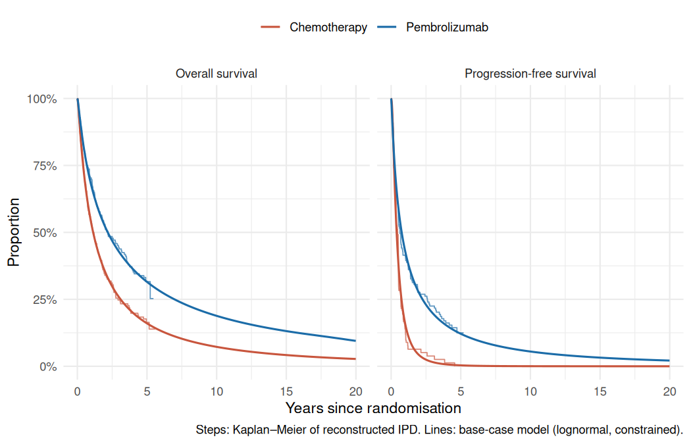
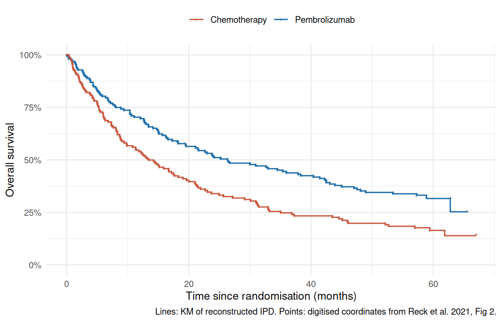
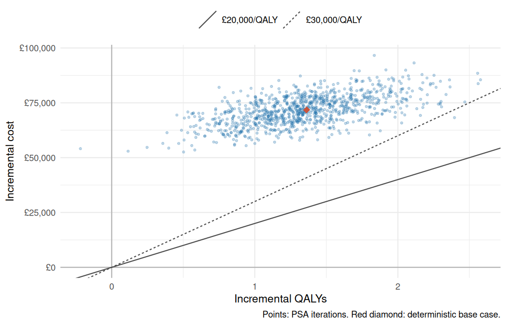

Health economics · Cost-effectiveness modelling
Pembrolizumab in PD-L1 ≥ 50% NSCLC: a reproducible partitioned survival model
Is first-line pembrolizumab cost-effective against platinum chemotherapy for metastatic non-small-cell lung cancer with high PD-L1 expression, using five-year trial data and NHS list prices? I rebuilt a NICE TA531-style model in R from published evidence only, with every input traced to a public source and the whole analysis rebuilt by one pipeline command.

Rebuilding an appraisal from public evidence
NICE recommended pembrolizumab for untreated PD-L1 ≥ 50% NSCLC in TA531 (2018), using KEYNOTE-024 data with about two years of follow-up and a confidential discount. Five-year results have since been published. I wanted to know what a transparent model built only from public sources says now, and to build it the way a submission model should be built: traceable inputs, logged decisions, tests, and results that regenerate from the raw data.
- Structure. Three states (progression-free, progressed, dead), weekly cycles, a 20-year horizon, NHS and PSS perspective, 3.5% discounting, trapezoidal half-cycle correction.
- Costs. Drug acquisition with the 2-year stopping rule, administration, monitoring, adverse events, terminal care, and subsequent therapy including immunotherapy after crossover.
- Utilities. TA531’s time-to-death utilities, age-adjusted and capped at general-population EQ-5D norms.
- Traceability. Every input in
data-raw/has a source, andDECISIONS.mdrecords each methodological choice with its rationale and the alternatives tested.
Patient-level data from a published figure, checked against pre-set thresholds
The OS and PFS curves were extracted from the vector paths in the open-access article PDF, so the step coordinates are read exactly rather than clicked by hand. Individual patient data were then reconstructed with the Guyot et al. (2012) algorithm. Acceptance thresholds were fixed before reconstruction, and the pipeline stops if any check fails.
| Overall survival | Published | Reconstructed | Threshold |
|---|---|---|---|
| Median, pembrolizumab (months) | 26.3 | 26.35 | ± 1 |
| Median, chemotherapy (months) | 13.4 | 13.44 | ± 1 |
| Hazard ratio | 0.62 | 0.64 | ± 0.03 |
| 5-year survival, pembrolizumab | 31.9% | 31.6% | ± 3 pts |
| 5-year survival, chemotherapy | 16.3% | 16.4% | ± 3 pts |

The published HR comes from a stratified Cox model; the reconstructed data carry no stratification factors, so the comparison uses an unstratified model. Both are intention-to-treat and unadjusted for crossover.
Choosing a tail when five years must cover twenty
Nine models were fitted to each arm separately: exponential, Weibull, Gompertz, log-logistic, lognormal, generalised gamma and Royston–Parmar splines with 1–3 knots. The proportional hazards test was passed for OS (P = 0.66) but failed for PFS (P = 0.001), which supports separate fits.
- Base case: lognormal for OS and PFS. It had the lowest combined AIC across arms, reproduced observed 5-year OS (31.5% vs 31.6%), and its falling hazard matched the smoothed empirical hazard.
- Plausibility constraints. OS is never allowed below general-population mortality (ONS life tables, England 2022–2024) and PFS never exceeds OS.
- The tail is the main uncertainty. Candidate models with similar fit gave 20-year pembrolizumab OS from 2.5% (Weibull) to 12.2% (Gompertz), so each was carried into the scenario analysis.
More life years, but not cost-effective at list price
| Discounted, per patient | Pembrolizumab | Chemotherapy | Incremental |
|---|---|---|---|
| Life years | 4.20 | 2.45 | 1.75 |
| QALYs | 3.20 | 1.83 | 1.36 |
| Total cost | £135,281 | £63,499 | £71,782 |
| ICER (£ per QALY) | £52,670 |
First-line drug acquisition (£88,908) drives the cost difference, partly offset by lower subsequent-therapy costs: two-thirds of the chemotherapy arm crossed over to immunotherapy, costing £31,043 per patient against £7,339 in the pembrolizumab arm.
| Scenario | ICER (£ per QALY) |
|---|---|
| Base case (lognormal OS and PFS) | 52,670 |
| OS log-logistic / Gompertz | 55,282 / 56,022 |
| OS Weibull / exponential | 60,841 / 67,762 |
| OS TA531 piecewise (KM to 33 weeks + exponential) | 65,237 |
| Treatment effect wanes from 5 / 3 years | 65,081 / 78,365 |
| Progression-based utilities | 56,544 |
| Discount rate 1.5% | 47,370 |
| No 2-year stopping rule | 123,489 |
Because TA531’s decision used a confidential discount, the model answers a different question instead: what price would make pembrolizumab cost-effective? A 68% discount on every pembrolizumab administration (including use after crossover) reaches £20,000 per QALY, and 47% reaches £30,000.
Probabilistic and one-way sensitivity
The PSA ran 1,000 iterations with a fixed seed: beta distributions for utilities and proportions, gamma for costs, and multivariate normal draws of the survival parameters from each fit’s covariance matrix.

- Probability cost-effective: 0% at £20,000 and 0.1% at £30,000 per QALY. It passes 50% at about £54,000.
- One-way sensitivity: subsequent-therapy use in the chemotherapy arm moved the ICER most (£49,984 to £55,453), followed by progression-free monitoring costs and the long-term utility. Across all parameters the ICER stayed between £49,984 and £55,624.
What this does and doesn’t show
What it supports
- At list price, pembrolizumab is not cost-effective at NICE thresholds under any tested scenario.
- The result is robust to parameter uncertainty; it is most sensitive to the 2-year stopping rule, treatment-effect waning and the survival tail.
- The five-year data give a mean OS about twice TA531’s 2017 estimate (62 vs 36 months). Applying TA531’s own extrapolation method to the new data gives 48 months, so the gain comes partly from longer follow-up and partly from the choice of tail.
What it doesn’t show
- NICE’s decision: TA531 used a confidential price, so this is not NICE’s model or result.
- Real patient data: survival comes from reconstructed IPD, and treatment duration is assumed to follow PFS because time-on-treatment curves are not public.
- Crossover-adjusted effects: the OS comparison is intention-to-treat, and crossover is handled only through subsequent-therapy costs.
Reck et al. (2021) is published under CC BY-NC-ND 4.0; the repository stores only numerical coordinates extracted from Figure 2, with attribution, and does not reproduce the figure. ONS, eMIT and NHS England data are used under the Open Government Licence v3.0.